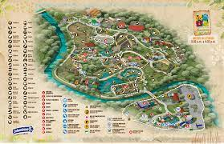

Zoológico de Cali
Es el parque zoológico en si, de carácter ambiental y con énfasis en la fauna local.
!Pasion por la vida¡
Es el parque zoológico en si, de carácter ambiental y con énfasis en la fauna local.

Es el centro de investigación de la fundación, donde se desarrollan programas de conservación.
Es el centro de investigación centrado en el desarrollo de metodologías y proyectos educativos y de sostenimiento ambiental.
Es el Centro de Atención de Fauna Silvestre, es el lugar donde se coordinan las actividades con las autoridades ambientales en el manejo de animales silvestres.
Con un aforo de 108 personas, cuenta con una pantalla gigante donde se proyectan películas educativas y documentales.
Inaugurado en diciembre de 1997, la instalación cuenta con 400 m², la exhibición representa los ecosistemas de la orinoquía y el amazonas, además del océano Pacífico y el mar Caribe.
Abierto al público en 2003, el Mariposario cuenta con 450 m² donde habitan más de 1000 ejemplares de mariposa. Los especímenes criados desde los huevos, son liberados por la mañana.